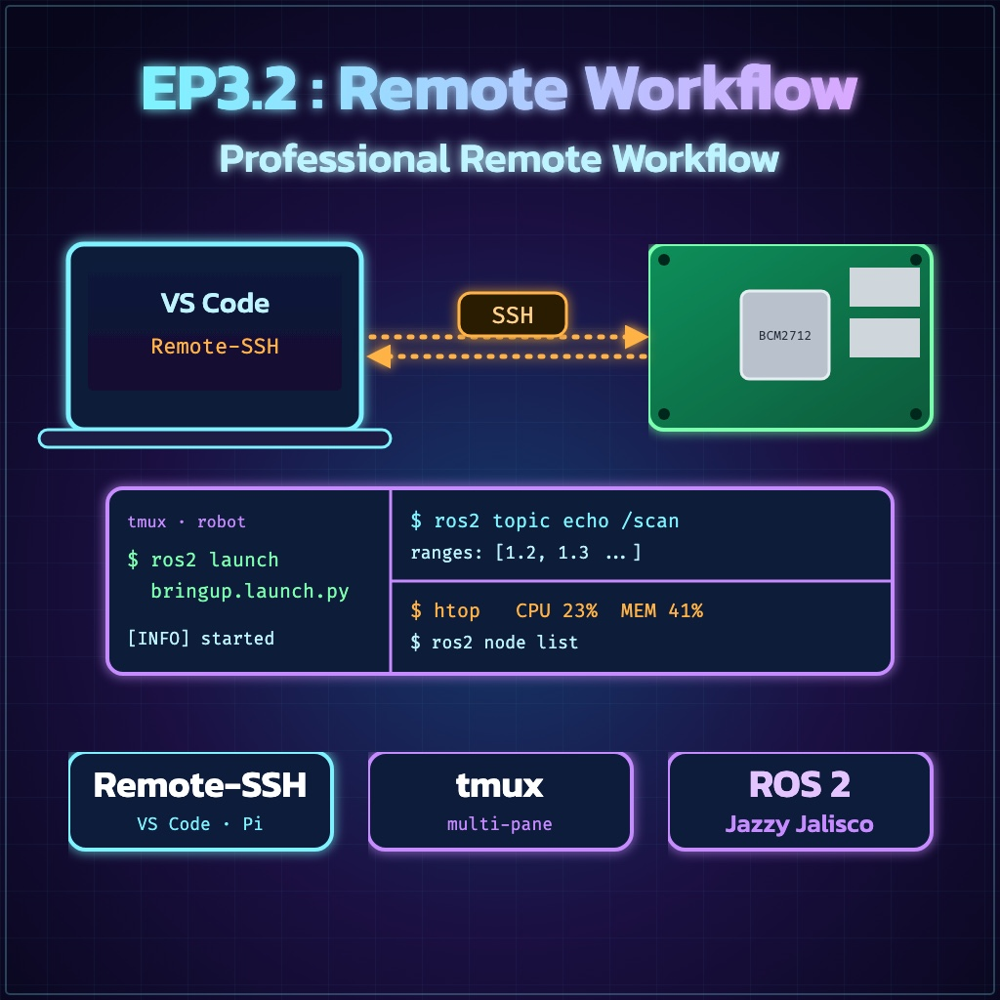
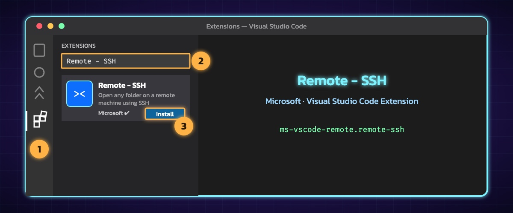
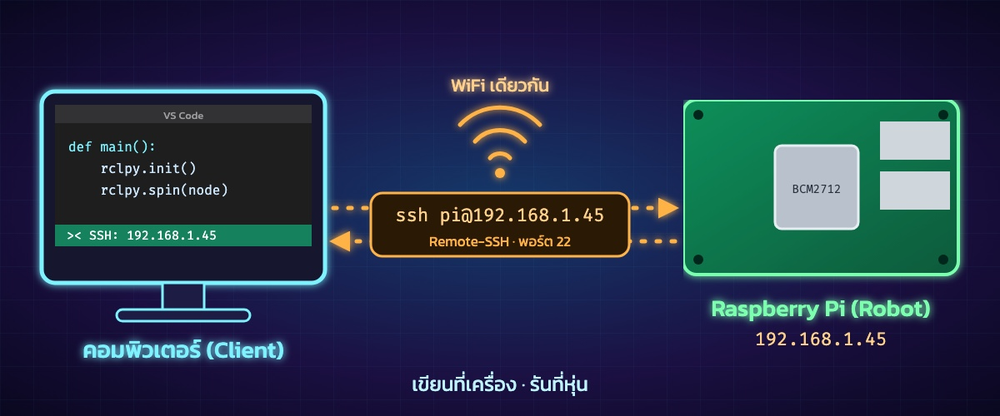

"เชื่อมต่อคอมพิวเตอร์กับหุ่นยนต์ ให้เป็นหนึ่งเดียวด้วย VS Code"
ใน EP นี้เราจะหยุดการถอด SD Card หรือการต่อจอแยกให้ Raspberry Pi
แต่เราจะใช้ Remote-SSH เพื่อควบคุมทุกอย่างจากหน้าจอคอมพิวเตอร์เครื่องเดียว!
ก่อนจะเชื่อมต่อได้ เราต้องรู้ก่อนว่า Raspberry Pi ของเราอยู่ที่ไหนในวงเครือข่าย (WiFi เดียวกัน)
ผลลัพธ์จะเป็นตัวเลข เช่น 192.168.1.45 นั่นคือ "บ้านเลขที่" ของหุ่นยนต์เรา


><ssh [ชื่อuser]@[เลขIP]ubuntu หรือตามที่อาจารย์ตั้งไว้)เมื่อเชื่อมต่อสำเร็จ คุณจะเห็นชื่อ SSH: [IP] ที่มุมล่างซ้าย ต่อไปนี้คือขั้นตอนการทำงานจริง:
เขียนโค้ดใน VS Code แล้วกด Save ไฟล์จะถูกบันทึกที่ Raspberry Pi ทันที
เปิด Terminal ใน VS Code (Ctrl + `) แล้วสั่ง colcon build บนตัวหุ่น
ใช้ Terminal เดียวกันสั่ง ros2 run เพื่อดูหุ่นยนต์เคลื่อนที่!